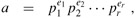
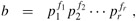
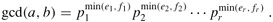
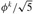
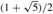
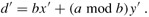

|
|
< Day Day Up > |
|
In this section, we describe Euclid's algorithm for computing the greatest common divisor of two integers efficiently. The analysis of running time brings up a surprising connection with the Fibonacci numbers, which yield a worst-case input for Euclid's algorithm.
We restrict ourselves in this section to nonnegative integers. This restriction is justified by equation (31.8), which states that gcd(a, b) = gcd(|a|, |b|).
In principle, we can compute gcd(a, b) for positive integers a and b from the prime factorizations of a and b. Indeed, if
| (31.11) |  |
| (31.12) |  |
with zero exponents being used to make the set of primes p1, p2, ..., pr the same for both a and b, then, as Exercise 31.2-1 asks you to show,
| (31.13) |  |
As we shall show in Section 31.9, however, the best algorithms to date for factoring do not run in polynomial time. Thus, this approach to computing greatest common divisors seems unlikely to yield an efficient algorithm.
Euclid's algorithm for computing greatest common divisors is based on the following theorem.
For any nonnegative integer a and any positive integer b,
gcd(a, b) = gcd(b, a mod b).
Proof We shall show that gcd(a, b) and gcd(b, a mod b) divide each other, so that by equation (31.5) they must be equal (since they are both nonnegative).
We first show that gcd(a, b) | gcd(b, a mod b). If we let d = gcd(a, b), then d | a and d | b. By equation (3.8), (a mod b) = a - qb, where q = ⌊a/b⌋. Since (a mod b) is thus a linear combination of a and b, equation (31.4) implies that d | (a mod b). Therefore, since d | b and d | (a mod b), Corollary 31.3 implies that d | gcd(b, a mod b) or, equivalently, that
Showing that gcd(b, a mod b) | gcd(a, b) is almost the same. If we now let d = gcd(b, a mod b), then d | b and d | (a mod b). Since a = qb + (a mod b), where q = ⌊a/b⌋, we have that a is a linear combination of b and (a mod b). By equation (31.4), we conclude that d | a. Since d | b and d | a, we have that d | gcd(a, b) by Corollary 31.3 or, equivalently, that
Using equation (31.5) to combine equations (31.14) and (31.15) completes the proof.
The Elements of Euclid (circa 300 B.C.) describes the following gcd algorithm, although it may be of even earlier origin. Euclid's algorithm is expressed as a recursive program based directly on Theorem 31.9. The inputs a and b are arbitrary nonnegative integers.
EUCLID(a, b) 1 if b = 0 2 then return a 3 else return EUCLID(b, a mod b)
As an example of the running of EUCLID, consider the computation of gcd(30, 21):
|
EUCLID(30, 21) |
= |
EUCLID(21,9) |
|
= |
EUCLID(9,3) |
|
|
= |
EUCLID(3,0) |
|
|
= |
3. |
In this computation, there are three recursive invocations of EUCLID.
The correctness of EUCLID follows from Theorem 31.9 and the fact that if the algorithm returns a in line 2, then b = 0, so equation (31.9) implies that gcd(a, b) = gcd(a, 0) = a. The algorithm cannot recurse indefinitely, since the second argument strictly decreases in each recursive call and is always nonnegative. Therefore, EUCLID always terminates with the correct answer.
We analyze the worst-case running time of EUCLID as a function of the size of a and b. We assume with no loss of generality that a > b ≥ 0. This assumption can be justified by the observation that if b > a ≥ 0, then EUCLID(a, b) immediately makes the recursive call EUCLID(b, a). That is, if the first argument is less than the second argument, EUCLID spends one recursive call swapping its arguments and then proceeds. Similarly, if b = a > 0, the procedure terminates after one recursive call, since a mod b = 0.
The overall running time of EUCLID is proportional to the number of recursive calls it makes. Our analysis makes use of the Fibonacci numbers Fk, defined by the recurrence (3.21).
If a > b ≥ 1 and the invocation EUCLID(a, b) performs k ≥ 1 recursive calls, then a ≥ Fk+2 and b ≥ Fk+1.
Proof The proof is by induction on k. For the basis of the induction, let k = 1. Then, b ≥ 1 = F2, and since a > b, we must have a ≥ 2 = F3. Since b > (a mod b), in each recursive call the first argument is strictly larger than the second; the assumption that a > b therefore holds for each recursive call.
Assume inductively that the lemma is true if k - 1 recursive calls are made; we shall then prove that it is true for k recursive calls. Since k > 0, we have b > 0, and EUCLID(a, b) calls EUCLID(b, a mod b) recursively, which in turn makes k - 1 recursive calls. The inductive hypothesis then implies that b ≥ Fk+1 (thus proving part of the lemma), and (a mod b) ≥ Fk. We have
|
b + (a mod b) |
= |
b + (a - ⌊a/b⌋ b) |
|
≤ |
a , |
since a > b > 0 implies ⌊a/b⌋ ≥ 1. Thus,
|
a |
≥ |
b + (a mod b) |
|
≥ |
Fk+1 + Fk |
|
|
= |
Fk+2 . |
The following theorem is an immediate corollary of this lemma.
For any integer k ≥ 1, if a > b ≥ 1 and b < Fk+1, then the call EUCLID(a, b) makes fewer than k recursive calls.
We can show that the upper bound of Theorem 31.11 is the best possible. Consecutive Fibonacci numbers are a worst-case input for EUCLID. Since EUCLID(F3, F2) makes exactly one recursive call, and since for k > 2 we have Fk+1 mod Fk = Fk-1, we also have
|
gcd(Fk+1, Fk) |
= |
gcd(Fk, (Fk+1 mod Fk)) |
|
= |
gcd(Fk, Fk-1). |
Thus, EUCLID(Fk+1, Fk) recurses exactly k - 1 times, meeting the upper bound of Theorem 31.11.
Since Fk is approximately , where φ is the golden ratio  defined by equation (3.22), the number of recursive calls in EUCLID is O(lg b). (See Exercise 31.2-5 for a tighter bound.) It follows that if EUCLID is applied to two β-bit numbers, then it will perform O(β) arithmetic operations and O(β3) bit operations (assuming that multiplication and division of β-bit numbers take O(β2) bit operations). Problem 31-2 asks you to show an O(β2) bound on the number of bit operations.
We now rewrite Euclid's algorithm to compute additional useful information. Specifically, we extend the algorithm to compute the integer coefficients x and y such that
Note that x and y may be zero or negative. We shall find these coefficients useful later for the computation of modular multiplicative inverses. The procedure EXTENDED-EUCLID takes as input a pair of nonnegative integers and returns a triple of the form (d, x, y) that satisfies equation (31.16).
EXTENDED-EUCLID(a, b) 1 if b = 0 2 then return (a, 1, 0) 3 (d′, x′, y′) ← EXTENDED-EUCLID(b, a mod b) 4 (d, x, y) ← (d′, y′, x′- ⌊a/b⌋ y′) 5 return (d, x, y)
Figure 31.1 illustrates the execution of EXTENDED-EUCLID with the computation of gcd(99, 78).
|
a |
b |
⌊a/b⌋ |
d |
x |
y |
|---|---|---|---|---|---|
|
|
|||||
|
99 |
78 |
1 |
3 |
-11 |
14 |
|
78 |
21 |
3 |
3 |
3 |
-11 |
|
21 |
15 |
1 |
3 |
-2 |
3 |
|
15 |
6 |
2 |
3 |
1 |
-2 |
|
6 |
3 |
2 |
3 |
0 |
1 |
|
3 |
0 |
- |
3 |
1 |
0 |
The EXTENDED-EUCLID procedure is a variation of the EUCLID procedure. Line 1 is equivalent to the test "b = 0" in line 1 of EUCLID. If b = 0, then EXTENDED-EUCLID returns not only d = a in line 2, but also the coefficients x = 1 and y = 0, so that a = ax + by. If b ≠ 0, EXTENDED-EUCLID first computes (d′, x′, y′) such that d′= gcd(b, a mod b) and
| (31.17) |  |
As for EUCLID, we have in this case d = gcd(a, b) = d′ = gcd(b, a mod b). To obtain x and y such that d = ax + by, we start by rewriting equation (31.17) using the equation d = d′ and equation (3.8):
|
d |
= |
bx′ + (a - ⌊a/b⌋ b)y′ |
|
= |
ay′ + b(x′ - ⌊a/b⌋ y′). |
Thus, choosing x = y′ and y = x′ - ⌊a/b⌋ y′ satisfies the equation d = ax + by, proving the correctness of EXTENDED-EUCLID.
Since the number of recursive calls made in EUCLID is equal to the number of recursive calls made in EXTENDED-EUCLID, the running times of EUCLID and EXTENDED-EUCLID are the same, to within a constant factor. That is, for a > b > 0, the number of recursive calls is O(lg b).
Rewrite EUCLID in an iterative form that uses only a constant amount of memory (that is, stores only a constant number of integer values).
If a > b ≥ 0, show that the invocation EUCLID(a, b) makes at most 1 + logφ b recursive calls. Improve this bound to 1 + logφ(b/ gcd(a, b)).
Define the gcd function for more than two arguments by the recursive equation gcd(a0, a1, ..., an) = gcd(a0, gcd(a1, a2, ..., an)). Show that the gcd function returns the same answer independent of the order in which its arguments are specified. Also show how to find integers x0, x1, ..., xn such that gcd(a0, a1, ..., an) = a0x0 + a1x1 + ··· + anxn. Show that the number of divisions performed by your algorithm is O(n + lg(max {a0, a1, ..., an})).
|
|
< Day Day Up > |
|